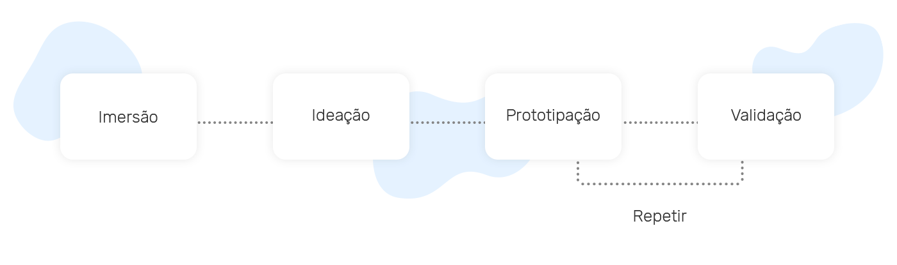
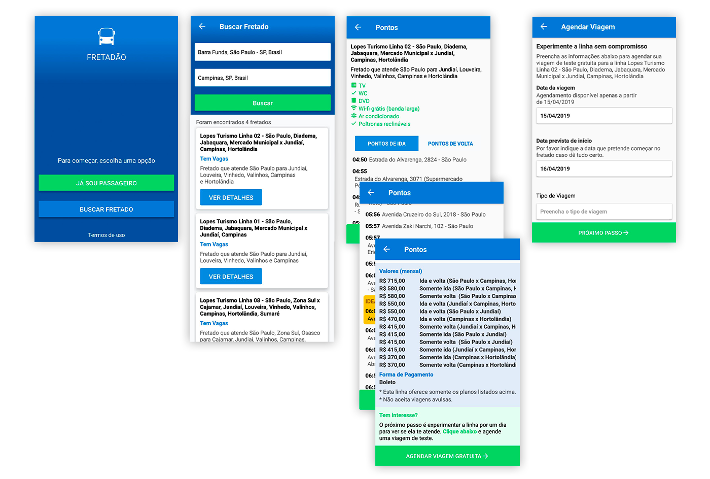
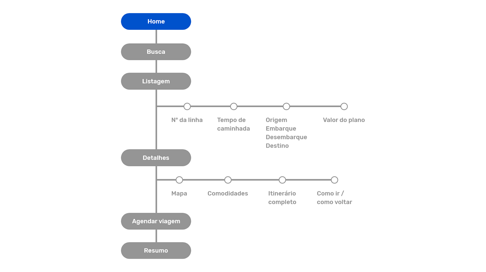
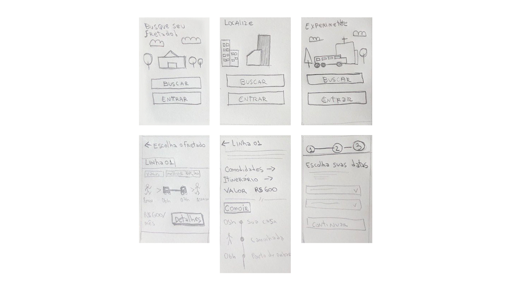
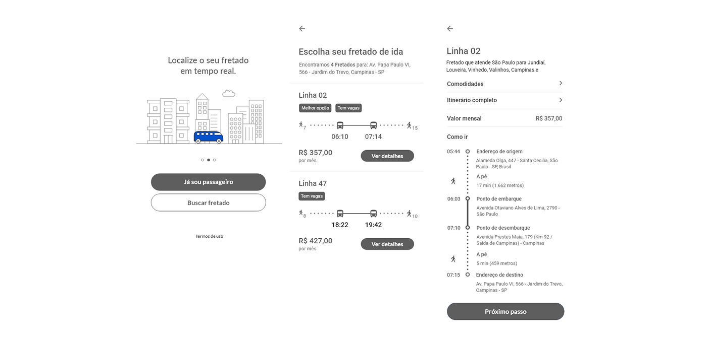
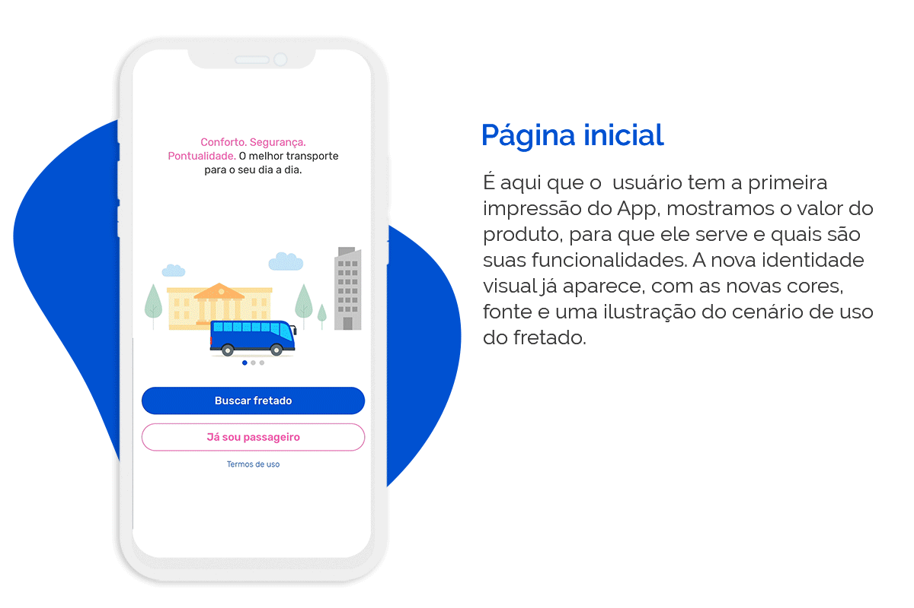
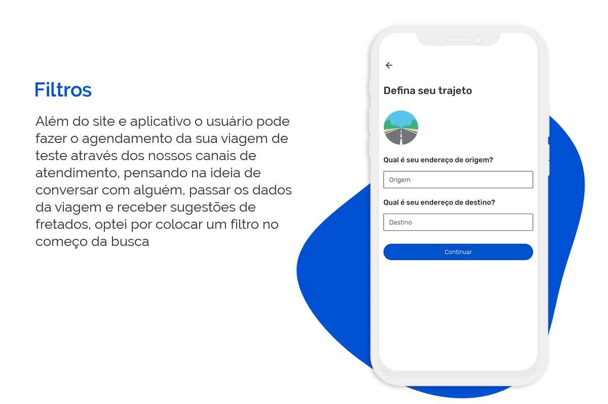

APP para passageiros | Mobile UI/UX

Cliente
Fretadão é uma empresa de tecnologia voltada para a área de fretamento e oferece o serviço de planejamento, implantação e gestão da operação de fretado para colaboradores de empresas de médio e grande porte.
Meu primeiro projeto como designer de produtos no Fretadão foi redesenhar o aplicativo com a nova identidade visual que criei para a marca e torná-lo mais fácil de usar.
Objetivos
- Redesenhar o aplicativo com a nova identidade visual;
- Melhorar a experiência dos usuários;
- Otimizar o aplicativo com as funções existentes;
- Testar com usuários e analisar o funcionamento do novo layout.
Processo de design

Imersão
Análise dos concorrentes
Há diversos sites e aplicativos de transporte no mercado, revisar esses produtos me ajudou a entender as estratégias que eles aplicam.
Concorrentes diretos: oferecem serviços similares de fretados ou transporte rodoviário.
- Viação Cometa
- Buser
- Clickbus
Concorrentes indiretos: soluções alternativas para mobilidade ou viagem.
- Decolar
- BlaBlaCar
- Uber
Análise da interface
Analisei tela por tela do aplicativo, para entender as funcionalidades, arquitetura, navegação e identificar pontos problemáticos e/ou de melhoria.

Página inicial: a primeira tela é muito simples, há apenas um texto e dois botões, quando baixamos um aplicativo novo, esperamos entender um pouco melhor sobre ele, ou até mesmo relembrar para que serve e porque o baixamos.
Resultado de busca: olhando rapidamente, parece que todas as opções são iguais, é possível melhorar visualmente, organizar os dados nesta página, remover o que se repete e trazer mais informações sobre a linha, para que o usuário consiga diferenciar melhor as linhas para compará-las e então ver mais detalhes.
Detalhes da linha: é uma página longa, as informações podem ser organizadas e divididas, assim será possível dar destaque para as informações mais importantes.
Ideação
Depois de entender o problema e analisar cada ponto problemático, eu estava pronta para encontrar soluções.
Fluxo do usuário
Criei um fluxo sobre como os usuários vão navegar no novo app.

Esboços
Comecei a desenhar as telas principais do app para ter uma ideia das informações.

Refinamento
Depois de alguns rascunhos queria explorar mais e comecei a desenhar no Adobe XD, comecei com layouts sem cores.

Prototipagem e teste de usabilidade
Após alguns esboços, fiz a primeira versão do protótipo, já com elementos da nova identidade visual, adicionando mais informações à página de busca e separando melhor o conteúdo da página de detalhes da linha.
Testes internos
Realizei alguns testes de usabilidade internos, com funcionários da empresa, antigos e recém chegados, foi uma etapa crucial para validar minhas ideias e detectar erros antes de testar com usuários reais.
Alguns aprendizados e decisões de design que apliquei:
- Os horários são informações muito importantes e devem ser evidenciados.
- O tempo de caminhada estava confuso.
- Normalmente a viagem de ida e volta é feita pela mesma linha de fretado, então a divisão entre “ida” e “volta” no fluxo é uma coisa nova e não foi bem aceita entre os participantes. Decidi esperar e ver se mais usuários teriam essa percepção antes de remover a funcionalidade.
Testes externos
Optei por testes presenciais e para que os participantes não tivessem que se deslocar de grandes distâncias, selecionei pessoas que estavam buscando por linhas que embarcavam ou desembarcavam no bairro da Barra Funda, que é onde está localizado o escritório do Fretadão, além de pessoas que estavam buscando por linhas, também recrutei quem havia feito uma viagem de teste recentemente.
Seis usuários foram convidados para conhecer nosso escritório e participar da pesquisa.
O teste tinha como objetivo identificar erros e verificar a compreensão dos usuários em relação às informações e funções do novo aplicativo.
Foram realizados testes de usabilidade em protótipos Android, com duração média de 20 minutos, observando aspectos de usabilidade e entendimento das funcionalidades.
Cenário: imagine que você mora no bairro Barra Funda e vai começar a trabalhar em uma empresa em Campinas, com horário de entrada às 8h e saída às 17h.
Tarefa: encontre um fretado que melhor te atenda nessas condições.
Nenhum usuário teve dificuldade em realizar a tarefa e os feedbacks foram muito importantes para adicionar informações, sanar dúvidas e fazer ajustes na interface.
Iterações e design final
Depois de passar por várias iterações cheguei no design final, essas são as principais mudanças.

